NROM · 0
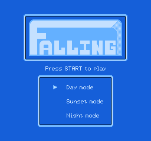
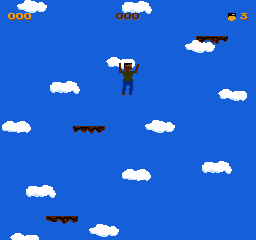
HOVER · LIVEFALLING
Vertical platformer. Hop clouds, dodge spikes, climb. Also the project's golden test frame.
A NES emulator you can play today, and an open-source 6502 chip growing its own CPU, PPU, APU and bus. The same FALLING frame runs in software and in RTL — byte for byte.
Play instantly in your browser below — the same GEM6502 core, compiled to WebAssembly. Or build it locally: a Mac or Linux machine, three commands, about two minutes. Six MIT-licensed ROMs are included.
Arrows / WASD move · Z or Space jump · X B · Enter Start · P pause · R reset. Click the screen once to give the emulator keyboard focus.
nesearch aggregates six catalogs, downloads and verifies ROMs, then launches them in the bundled GEM6502 or NEMU. CLI and local Web UI included.
All you need is Git. The games and their licences live in roms/.
$ git clone https://github.com/OneDayOneApp/Open6502.git $ cd Open6502
Install SDL2, then build NEMU's 6502 frontend. Works on Apple Silicon and Intel.
$ brew install sdl2 $ make -C NEMU m6502_defconfig $ make -C NEMU -j8
FALLING is a vertical platformer. Press V to start, WASD to move, Space to jump.
$ ./roms/play.sh falling
All you need is Git. The games and their licences live in roms/.
$ git clone https://github.com/OneDayOneApp/Open6502.git $ cd Open6502
Needs a C compiler, make and SDL2 headers. Use your distro's package manager elsewhere.
$ sudo apt install -y build-essential clang libsdl2-dev $ make -C NEMU m6502_defconfig $ make -C NEMU -j8
FALLING is a vertical platformer. Press V to start, WASD to move, Space to jump.
$ ./roms/play.sh falling
On Windows, use WSL2 and follow the Linux steps. Full keymap, headless screenshots and RTL frame capture are in Docs · Quickstart.
Player 2 uses the arrow keys, , . and / '.
Everything ships in roms/ — clone and play. Hover or focus a card for a live capture. These are homebrew ROMs, each under its own MIT licence.


HOVER · LIVEVertical platformer. Hop clouds, dodge spikes, climb. Also the project's golden test frame.
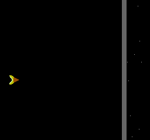
NROM · 0Space shooter. It runs, but the starfield still has a known rendering gap — a PPU issue, not a ROM issue.
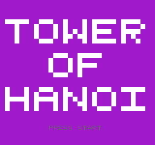
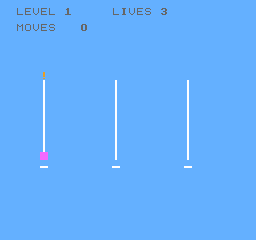
HOVER · LIVEThe classic puzzle. Great for exercising input, menus and static backgrounds — and for a break at work.
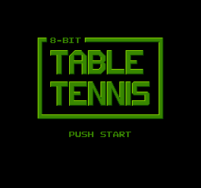
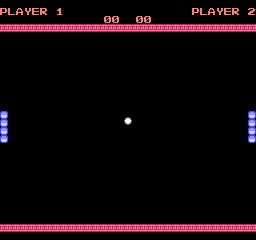
HOVER · LIVETwo-player pong. Two people hunched over one keyboard is the correct 8-bit experience.
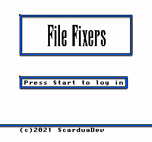
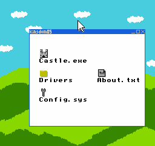
HOVER · LIVEA puzzle game inside a file manager. MMC3 CHR banking and IRQ are exercised for real here.
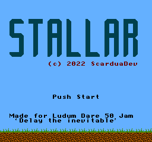
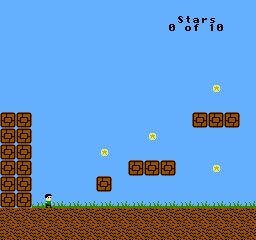
HOVER · LIVESide-scrolling platformer. Scrolling, sprites and MMC3 all at once — the busiest regression sample.
A C++20 tool in the same repo. It aggregates GitHub homebrew, Homebrew Hub, PDRoms and Internet Archive, supports resumable downloads and SHA-256 checks, and can launch GEM6502 or NEMU.
Numbers from the last verification (2026-11-11). This is not a finished chip — but every “passed” has reproducible evidence, and every “not yet” is listed too.
On one side the NEMU software reference; on the other the SystemVerilog RTL. Drag the divider — you can't see a difference. That's the point.
NEMU is REF; RTL is DUT. Same ROM, same frame, same 256×240 NTSC image. RTL's SHA-256 is identical to NEMU's. That means the chain from CPU fetch to PPU pixels agrees — at least for this frame.


A single 21.477272 MHz clock with enable phases for CPU, PPU and APU — no multi-clock CDC. Every peripheral exposes observable bus events for DiffTest against NEMU.
input clk_21m, rst_n; output vid_pclk, vid_de; output vid_hsync, vid_vsync; output [11:0] vid_rgb; output aud_valid; output signed [15:0] aud_sample; input [7:0] joy1, joy2; // cart bus + dbg event
These are Yosys generic-cell estimates, not silicon area. They say one thing: the CPU is small, the PPU is the elephant. Next step: replace the PPU register arrays with BRAM / SRAM.
A later stage may not hide a failure in an earlier one. This is both the roadmap and the acceptance rule: NEMU → RTL → FPGA → 55nm ASIC.
Prove the game runs correctly first. Six ROMs playable, CPU Klaus PASS, screenshots reproducible.
status WORKING · 90%28 tests, Klaus PASS, golden frame SHA match, START frame rendered. Missing cycle accuracy.
status PROTOTYPE · 60%Needs full synthesis, BRAM inference, timing constraints, VGA/HDMI and audio, plus board bring-up.
status NEXT · 10%55nm standard cells and SRAM, DFT/scan, timing/power, DRC/LVS, package and shuttle.
status PLANNING · 5%This project spans software, RTL, FPGA and ASIC. If any layer stalls, 55nm never happens. If you only know one slice, that's enough.
Add a unit test for PPU $2007 palette reads
Add frame-index assertions to sim/game and pin the golden frame
Add a controller A/B/Select/Start order test
Verification · input order is the easiest compatibility bug to miss 04Rewrite PPU sprite selection as a sequential scan and drop the big mux
PPU / FPGA · directly targets area and board bring-upThe questions visitors ask most, answered without polish. Deeper fixes are in the docs' Troubleshooting section.
docs/open6502-chip/. Just want a fast C model: GEM6502 — but note it's still a legacy instruction-driven model, not a complete chip timing platform.docs/images/. Until the maintainers publish the root licence and contribution terms, don't assume the code is redistributable; read CONTRIBUTING.md first.Both roads lead to the same chip. The only difference is where you enter.